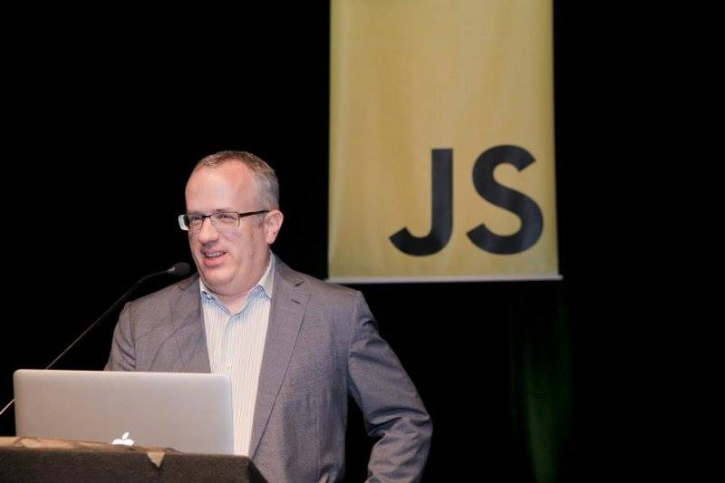

Brendan Eich
The man who created Javascript

Brendan Eich is an American technologist and creator of the JavaScript programming language. He co-founded the Mozilla project, the Mozilla Foundation and the Mozilla Corporation, and served as the Mozilla Corporation's chief technical officer and briefly its chief executive officer. He is the CEO of Brave Software.